Stellation
Take a polyhedron and extend every face plane to infinity. The planes cut each other, and cut space into bounded cells. Choose a symmetric set of those cells and you have a stellated solid.
The two-dimensional version of the same idea is familiar: extend the sides of a pentagon until they meet again and you get a pentagram. In three dimensions the same construction gives the great icosahedron, Kepler's two star polyhedra, and the several hundred stellations of the icosahedron that have been cataloged since.
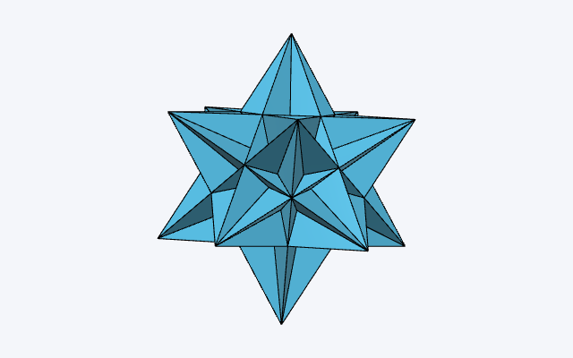
The app
Pick one of 121 solids, watch its face planes cut space into cells, and choose cells in any of three linked views — the solid, the stellation diagram, or the cells table. Export to OFF, OBJ or STL.
Learn how it works
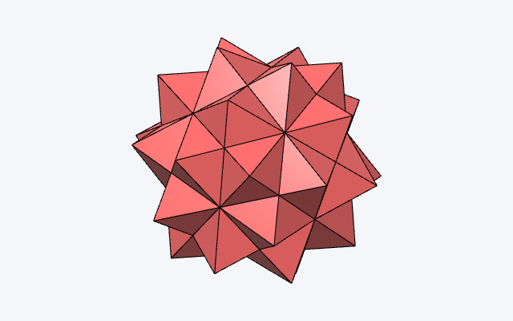
Cells walkthrough
How the Cells table works, and how to build the classical stellations of the icosahedron with it.
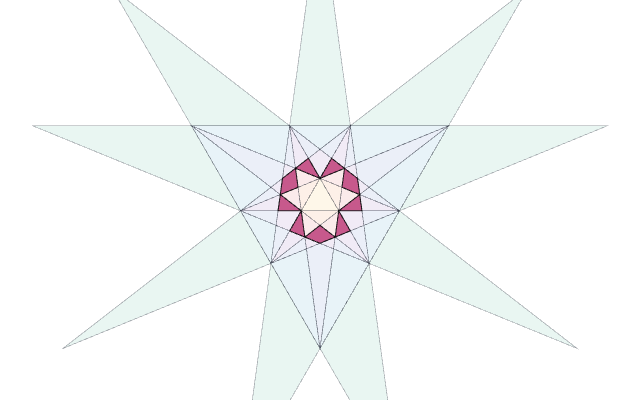
Controls & views
The three views, and the two gestures that work the same way in all of them.
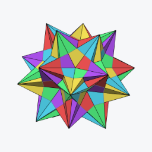
Coloring by symmetry
Cosets, orbits, blends and mirror splits — the classical compound colorings, each one click from the live app.
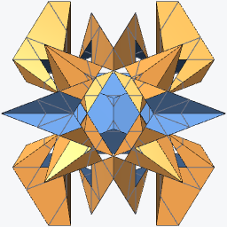
Examples
A gallery of stellations worth a second look — click one and the app opens with it built.
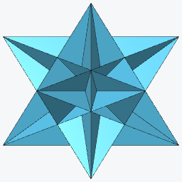
The fifty-nine icosahedra
All of them, from the icosahedron to the final stellation, with the notation that names each one.
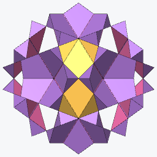
Under different rules
Fifty-nine is what one set of rules allows. Seven lists, seven answers — 25, 36, 50.
History
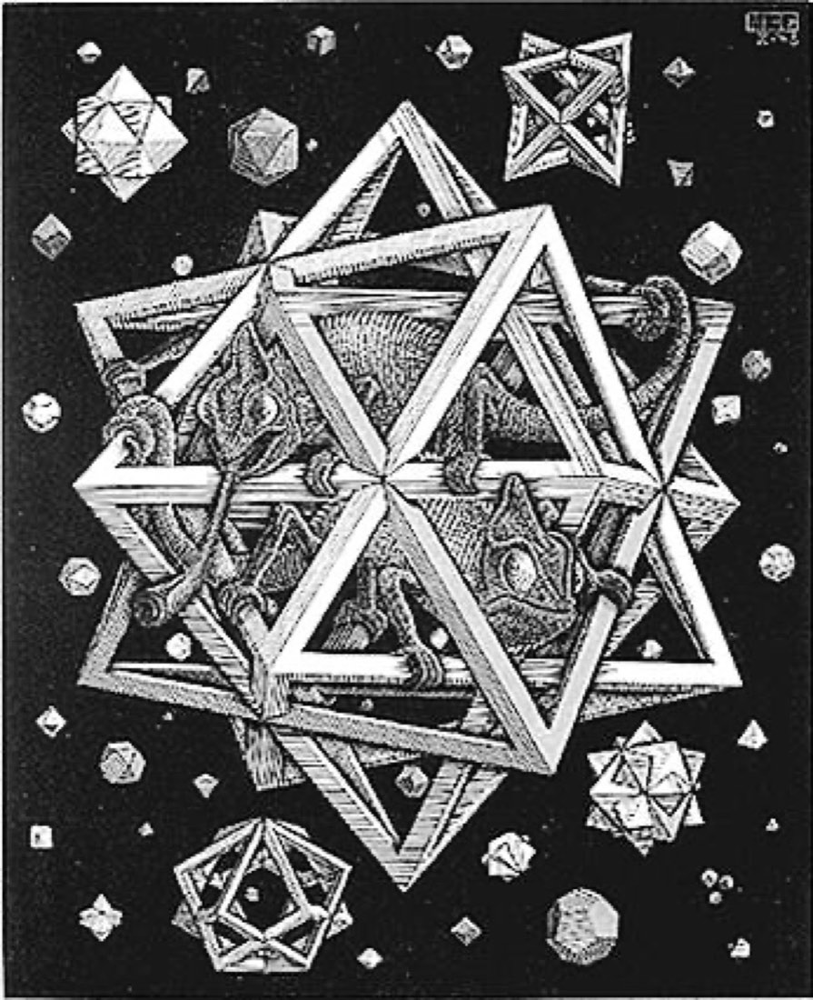
Six hundred years of stars
From a floor in Venice to quasicrystals — with live models you can build yourself.
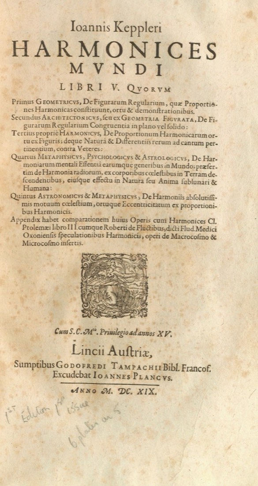
Fact-check
A claim-by-claim source ledger for the history, with corrections, primary sources and image credits.
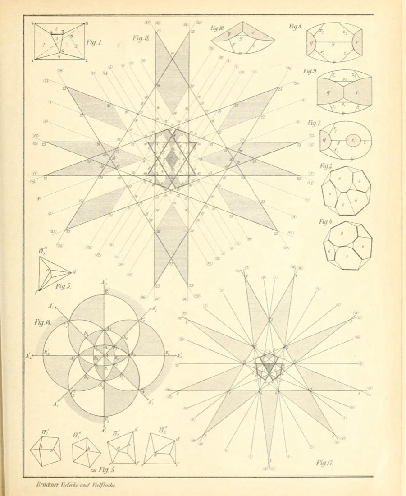
Brückner 1900, interactive
The plates of Vielecke und Vielflache, the pages that describe them, and the same solids rebuilt live.
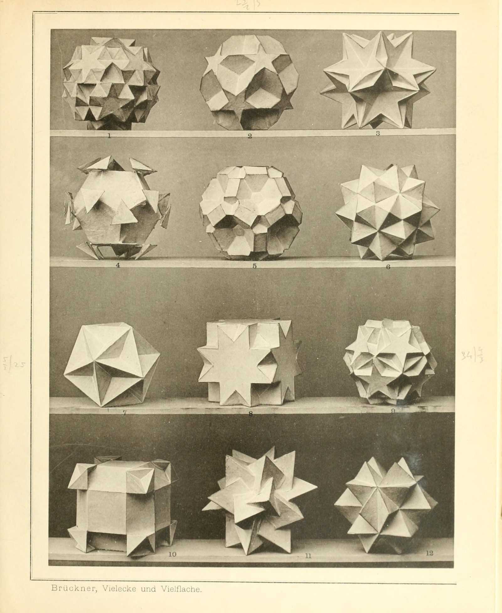
The plates, clickable
Every model on Brückner's photographic plates: choose one and the engine rebuilds it live below.